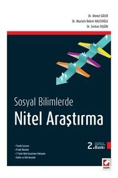
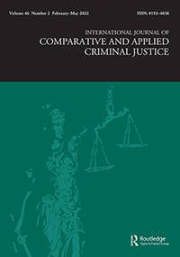
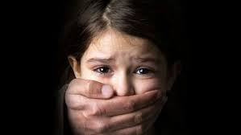

Qualitative Research Methods in Social Science
The revised and updated 2nd edition has been prepared for the "research methods" courses taught at our universities on qualitative research, and will be a reference book for researchers who want to conduct qualitative research. In this book, starting from the basic philosophy on which qualitative research is based, we will explain in detail, both theoretically and practically, the aspects of qualitative research that differ from quantitative research, how to design and conduct qualitative research, and how to apply seven different qualitative research approaches from the beginning to the end.
An Empirical Test of Age-Graded Informal Social Control Theory: New Correlates of Youth Deviance
This study examines several family structural variables that have a hypothesized effect on delinquency, substance abuse, and violence. We conducted a survey for potential correlates of Sampson and Laub’s age-graded informal social control theory variables within the Turkish context. Our large sample size (31,272), drawn from high school students in Istanbul, Turkey, allowed us to test the effects of family settings on youth deviance by using various statistical tests and programs. Our findings indicate that juveniles exposed to parental substance abuse are more likely to use illegal substances, commit a greater number of delinquent acts, and participate in more instances of violent behavior. Additionally, family social capital, residential mobility, religiosity, and the number of siblings were some other statistically significant correlates of delinquency. To reach out to this article, please Click here

Social context, family process, and Turkish boys’ pathway to incarceration: an application of the age-graded theory of informal social control
Although the juvenile delinquency problem in Turkey has become increasingly visible in the last decade, existing research on Turkish youth convicted of delinquency is still in its early stages. The purpose of this study was to apply the age-graded theory of informal social control that was developed by Sampson and Laub to the Turkish context, and to explore the role of family processes that lead young men to prison. Data are from in-depth interviews with 30 convicted juveniles in a juvenile prison. Data analysis highlighted the negative effects of specific family processes such as youth’s lack of attachment to their parents, which may result from harsh or erratic methods of discipline, and low levels of parental monitoring. The findings suggest that it is essential to implement family-oriented interventions to prevent and control serious delinquency. To reach out to this article, please Click here
Juvenile Justice and Incarceration in Turkey
In this chapter, I examine the juvenile justice system and incarceration practices in Turkey. The study focuses on the basic agents and the legislation of the juvenile justice system and the current status of juvenile incarceration. This study also reveals the problems of the functionality of the system. I conclude with policy recommendations for successful implementation of the juvenile justice system and prevention of recidivism.To reach out to this article, please Click here

Qualitative Analysis of the Incestuous Cases in Families: Sanliurfa Case Study
This article investigates the incestuous events in the lives of 35 incest victims who were
mostly abused by their biological fathers and biological elder brothers in Şanlıurfa. Data were
obtained from the interviews with both 35 incest victims and 12 mothers of incest victims. The
interviews focused on the incestuous events and the thoughts of incest victims during and after the
incestuous events. Victims were all girls between 12 and 18 years old. They came from overcrowded families who lived in small houses without privacy. Data revealed that most of the incest victims were abused by their biological fathers; first incestuous events started mostly when girls were between 12 and 14 years old. These events occurred mostly during 2 or 3 years. When mothers learned about these events, they mostly ignored and behaved as if nothing happened to their daughters. After these events, girls mostly blamed themselves, some committed suicide and felt deep depression. Some policy implications were advised at the end of the article. To reach out to this article, please Click here
Examination of Youth Gangs and Interventions in Three Contexts: American, European, and Turkish Experiences
In this article, we compared gang structures in three different contexts. We found that there was not consensus on gang definition and gang membership when comparing these three contexts which is also associated with underestimation or overestimation of the problem. Studies on gang problem and prevention strategies were relatively new and were not comprehensive in European and Turkish contexts compared to studies and prevention strategies in American context. To reach out to this article, please Click here